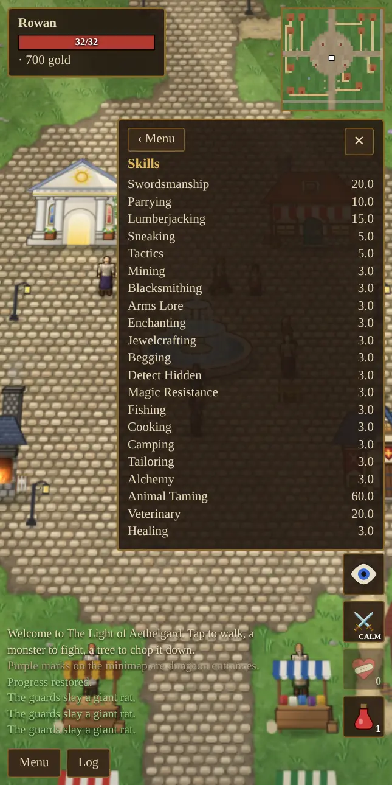
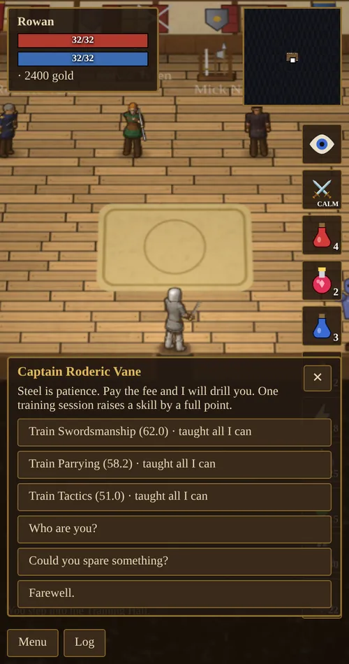

Chapter 3 of 11
Skills
Skills rise by using them. There are twenty-two, and most stay hidden until you first try them.
All skills
Skill values run from 0 to 100 in steps of 0.1. Open Menu → Skills to see yours. A skill you have never used does not appear in the list. Pickpocket appears the first time you pick a pocket, Archery once you hold a bow, and Magery and Meditation once you learn a spell.
Gear can add up to 25 more points to a skill, for an effective maximum of 125.

| Skill | What it does | Raised by |
|---|---|---|
| Swordsmanship | Melee hit chance (45% at 0, 100% at 100) and +1 damage per 25 points. | Melee attacks |
| Tactics | Multiplies all your weapon damage, up to +50% at 100. | Melee attacks |
| Parrying | Chance to block a blow: skill ÷ 2 percent, plus your shield’s parry bonus. | Being attacked |
| Archery | Bow hit chance and +1 arrow damage per 20 points. | Shooting |
| Magery | Spell damage and healing, familiar strength and polymorph duration. Rises 2.5× faster than other skills. | Casting |
| Meditation | How fast mana comes back. | Mana regenerating |
| Lumberjacking | Chance to cut logs, and logs per chop. | Chopping trees |
| Mining | Chance to break ore, ore per swing, and which ores you can work. | Mining |
| Blacksmithing | Smelting ore, forging gear, and repairing your own gear. | Smelting, forging, repairing |
| Arms Lore | Identifies magic items, improves exceptional forging and self-repair. | Fighting with gear, identifying, forging |
| Jewelcrafting | Making rings and necklaces. | Crafting jewelry |
| Enchanting | Success chance when binding aether into gear. | Enchanting |
| Sneaking | How rarely monsters notice you while sneaking. At 50, sneaking lets you pick pockets. | Sneaking near monsters |
| Pickpocket | Stealing from monsters and people without being caught. | Stealing |
| Detect Hidden | Spotting hidden chests, sneaking thieves and hidden player killers. | Searching |
| Begging | Getting gifts from townsfolk; at 100, each person may give you a unique keepsake jewel. | Asking “Could you spare something?” |
| Magic Resistance | Cuts damage from spells and the elements by 0.45% per point: 22.5% at 50, 45% at 100. | Being hit by spells, fire, lightning, frost, life-draining and elementals |
| Fishing | Chance of a bite turning into a catch, and of rarer fish. Low skill brings up junk. | Fishing |
| Cooking | Which dishes you can cook, how often you burn them, and how fine they turn out. | Cooking at a campfire |
| Camping | How fast you can make a camp secure: 10 seconds at 0, 1 second at 100. | Building a fire and staying near it |
| Tailoring | Spinning, weaving and tanning, and which clothes and armor you can sew and how often they come out Exceptional. | Shearing, spinning, weaving, tanning and sewing |
| Alchemy | Which potions you can brew, how often a brew works, the chance of a second dose, and how hard your explosion potions hit. | Brewing, gathering herbs, and blasting foes with explosion potions |
How skills grow
Every time you use a skill, it may rise by 0.1. The chance is high while the skill is low and falls steeply as it climbs. The message log tells you when a skill goes up.
| Skill value | 10 | 30 | 50 | 70 | 90 | 99 |
|---|---|---|---|---|---|---|
| Chance per use | 41% | 25% | 13% | 5% | 1.1% | 0.6% |
Several things speed this up:
- Dungeons: every gain chance is 1.5× higher underground.
- Intelligence: each point above 10 adds a little; 100 Intelligence makes gains 1.6× as likely.
- Skill-specific bonuses: Magery rises 2.5× as fast, Parrying 1.5×, and Lumberjacking and Mining get extra help while they are low.
- Harder work: mining richer ore, forging harder pieces and identifying rarer items all teach more.
- Hunger: a Full stomach makes gains 1.15× as likely; Hungry cuts them to 0.8× and Starving to 0.5×. See Food, Fishing & Camping.
- Rest and food: a night on a bedroll gives +25% for 10 minutes, and a honey cake gives +10% for a while.
Trainers
Teachers raise a skill by a full point per lesson, for gold. Each will teach a skill up to 50 and no further; after that you improve by practice only. The price rises with your skill, from about 34 gold at 20 to about 154 gold at 49. Each lesson button shows your current value and the price.

| Teacher | Where | Teaches |
|---|---|---|
| Captain Roderic Vane | Training Hall | Swordsmanship, Parrying, Tactics |
| Sylvie Wren | Training Hall (once you have used a bow) | Archery |
| Mick Nimblefingers | Training Hall | Sneaking, Pickpocket (once discovered), Detect Hidden |
| Archmage Ilvara | Mage tent (once you know a spell) | Magery, Meditation, Enchanting, Magic Resistance |
| Garrick Ironhand | The forge | Blacksmithing, Mining, Arms Lore |
| Mara the Merchant | Her shop | Cooking |
| Tamsin the Tailor | The tailor’s shop | Tailoring |
| Corvin the Alchemist | The alchemist’s shop | Alchemy |
Nobody teaches Fishing or Camping. You learn those by doing them.
Skill titles
Your title comes from your best fighting skill: Swordsmanship (Swordsman), Archery (Archer) or Magery (Mage). It shows on the character sheet, and the Hooded Stranger judges you by your best skill too.
| Skill | 0 | 10 | 20 | 30 | 40 | 50 | 60 | 70 | 80 | 90 | 100 |
|---|---|---|---|---|---|---|---|---|---|---|---|
| Rank | Novice | Apprentice | Journeyman | Skilled | Adept | Expert | Veteran | Elite | Champion | Master | Grandmaster |
For example, a hero with 64 Swordsmanship is a Veteran Swordsman. Reaching Master (90) in a fighting skill matters: that is when the Hooded Stranger starts sending you after world bosses.